Une application qui ne recharge plus : chaque geste mesuré
Chantier « sans rechargement », relevé du 23 novembre 2026. 61 gestes passés en revue, 47 chronométrés au clic sur quatre réseaux, plus la dictée de bout en bout (banc Playwright, copie de travail du 23.11, données inventées). Les choix t'attendent sous chaque écran ; « Copier mes réponses », en bas, les rassemble.
En bref
Le même toucher, deux téléphones
« C'est juste » sur la ligne 5 d'une offre de 33 lignes. À gauche, l'application d'aujourd'hui ; à droite, la proposition. Les durées sont celles mesurées par le banc sur le réseau choisi ; « cache gardé » rejoue le cas où le navigateur garde la feuille de style et le script (lot 1).

Prête.
Prête.
Après le rechargement, la page saute : le navigateur la ramène sur la ligne touchée (ancre #l14), en haut de l'écran. Sans rechargement, seule la ligne change.
Comment j'ai mesuré
- Où. Ma copie de travail dans WSL (
~/offreGen-fluidite, tête dechantier-voix-offredu 23.11), sa propre base (offregen_fluidite_vue), remise à zéro avant chaque mesure. Aucune donnée réelle : un compte de démo Peintre, 274 produits, 42 clients, une offre de 33 lignes (4 à vérifier, 2 sans prix, 2 prix dictés, une option, une variante, une ligne libre). - Comme sur le test. Un routeur imite l'Apache du site de test, relevé par curl le 23.11 : pages et fichiers compressés, aucune durée de cache, ETag suffixé « -gzip ». Contrôle : la feuille de style pèse 20 607 octets des deux côtés.
- Réseaux. Simulés par Chromium, une latence ajoutée à chaque requête : fibre 25 ms (l'aller-retour mesuré vers le test), 4G 100 ms à 9 et 3 Mbit/s, chantier 500 ms à 400 et 200 kbit/s. Une vraie 3G perd aussi des paquets : les chiffres du chantier sont optimistes.
- Deux caches. « Périmé » : chaque page redemande feuille de style, script et polices, ce que fait le test quand le navigateur ne sait plus s'ils sont frais. « Gardé » : rien n'est redemandé. Le vrai cas est entre les deux, selon l'âge du dernier déploiement.
- Le chemin sans rechargement est mesuré en envoyant la même requête par fetch, sans suivre la redirection : le serveur fait le même travail. Il manque la réponse utile (la ligne et les totaux, 1 à 2 Ko compressés, estimés).
- Pas mesuré. Un vrai téléphone (processeur plus lent : le rechargement y coûte plus, l'envoi seul presque pareil), Safari, la perte de paquets. Les gestes de l'équipe (administration) ont été lus sans être chronométrés.
Tous les gestes
Durées médianes, du toucher à l'écran à jour, cache périmé. En vert : le même envoi sans rechargement. « req. » : requêtes au serveur.
| Geste | Aujourd'hui | Rechargement utile ? | 4G | Chantier | Proposé |
|---|---|---|---|---|---|
| Se connecterConnexion | Page rechargée | Oui Nouvelle session, nouveau jeton : partir d'une page propre est plus sûr. | non mesuré | non mesuré | Garder. |
| Mot de passe oublié, choisir un mot de passeConnexion | Page rechargée | Oui Parcours de sécurité, une fois. | non mesuré | non mesuré | Garder. |
| Entrer dans la démo, passer à l'essai, revenir à mon espaceDémo | Page rechargée | Oui Le compte ou la session change. | non mesuré | non mesuré | Garder. |
| Étape suivante, passer le guideAssistant de bienvenue | Page rechargée | Oui Une fois par compte, chaque étape est un autre écran. | non mesuré | non mesuré | Garder ; profite du cache des fichiers.Lot 1, socle |
| Se déconnecterPlus, Réglages | Page rechargée | Oui Session détruite. Avec le hors ligne, la déconnexion doit aussi vider ce que le téléphone garde. | non mesuré | non mesuré | Garder, et vider le cache du téléphone.Lot 4, hors réseau |
| Changer son mot de passeRéglages | Page rechargée | Oui Les autres appareils sont déconnectés. | non mesuré | non mesuré | Garder. |
| Ouvrir une offreMes offres | Changement d'écran | Oui Autre écran. | 465 ms8 req., 162 Ko, tout chargé 550 ms | 2,2 s8 req., 162 Ko, tout chargé 4,3 s | Garder la page ; fichiers en cache, offre gardée dans le téléphone pour l'ouvrir sans réseau.Lot 1, socle |
| Revenir à la liste (retour)Mes offres | Changement d'écran | Oui Autre écran. La liste se recharge exprès au retour (app.js, pageshow) pour être à jour. | 52 ms8 req., 0,8 Ko, tout chargé 34 ms | 60 ms8 req., 0,8 Ko, tout chargé 35 ms | Garder ; liste gardée dans le téléphone hors réseau.Lot 4, hors réseau |
| Trier (récent, client, montant…)Mes offres | Changement d'écran | Non Toutes les offres sont déjà à l'écran : trier se fait dans le navigateur. | 398 ms8 req., 142 Ko, tout chargé 585 ms | 2,1 s8 req., 142 Ko, tout chargé 4,3 s | Tri dans le navigateur, sans requête.Lot 3, ajouter et catalogue |
| Archiver (glisser)Mes offres | Page rechargée | Non Seule la carte quitte la liste ; la liste revient en haut après le rechargement. | 509 ms9 req., 143 Ko, tout chargé 693 ms→136 ms1 req., 0,5 Ko | 2,7 s9 req., 143 Ko, tout chargé 4,9 s→594 ms1 req., 0,5 Ko | La carte part sur place, « Annuler » quelques secondes.Lot 2, offre |
| Supprimer (glisser)Mes offres | Page rechargée | Non Idem ; la suppression reste annulable. | 506 ms9 req., 143 Ko, tout chargé 672 ms→129 ms1 req., 0,5 Ko | 2,7 s9 req., 143 Ko, tout chargé 4,9 s→562 ms1 req., 0,5 Ko | La carte part sur place, « Annuler ».Lot 2, offre |
| Restaurer une offre archivéeMes offres | Page rechargée | Non La carte change de section. | 571 ms9 req., 143 Ko, tout chargé 759 ms→130 ms1 req., 0,5 Ko | 2,7 s9 req., 143 Ko, tout chargé 5,0 s→565 ms1 req., 0,5 Ko | Sur place.Lot 2, offre |
| « Plus tard » (vos prix), « Réessayer », « Retirer » (dictée en échec)Mes offres | Page rechargée | Non Un bandeau ou une carte change. | non mesuré | non mesuré | Sur place.Lot 2, offre |
| Onglets : Offres, Clients, Factures, PlusBarre du bas | Changement d'écran | Oui Autre écran. | 411 ms8 req., 142 Ko, tout chargé 559 ms | 2,1 s8 req., 142 Ko, tout chargé 4,3 s | Garder ; fichiers en cache, écrans gardés pour le hors ligne.Lot 1, socle |
| Parler : micro, « Terminer », envoi, préparationPartout | Envoi en arrière-plan | Non Déjà sans rechargement : la dictée part avec sa progression, les étapes avancent seules, la dictée reste à l'abri dans le téléphone. | non mesuré | non mesuré | Garder. L'offre prête ouvre une page : utile. |
| Importer un fichier audioPlus | Envoi en arrière-plan | Non Même chemin que la dictée. | non mesuré | non mesuré | Garder. |
| Corriger une quantité ou un prixOffre | Sans rechargement, mais l'offre entière revient | Non Déjà sans rechargement, mais la réponse est l'offre entière (deux requêtes, la page d'offre à chaque chiffre). Hors réseau : « Non enregistré », sans nouvel essai. | 320 ms2 req., 25 Ko→128 ms1 req., 0,5 Ko | 1,6 s2 req., 25 Ko→576 ms1 req., 0,5 Ko | Réponse réduite à la ligne et aux totaux ; file d'envoi hors réseau.Lot 2, offre |
| « C'est juste »Offre | Page rechargée | Non Seule l'étiquette « À vérifier » disparaît. | 536 ms9 req., 162 Ko, tout chargé 714 ms→138 ms1 req., 0,5 Ko | 2,7 s9 req., 162 Ko, tout chargé 4,9 s→572 ms1 req., 0,5 Ko | L'étiquette part au toucher, l'envoi suit.Lot 2, offre |
| Retirer une ligne (corbeille ou glisser)Offre | Page rechargée | Non Une ligne part. Après le rechargement, l'offre revient en haut (redirection sans ancre) : l'artisan perd sa place. | 618 ms9 req., 162 Ko, tout chargé 789 ms→140 ms1 req., 0,5 Ko | 2,8 s9 req., 162 Ko, tout chargé 5,0 s→590 ms1 req., 0,5 Ko | La ligne part sur place, « Annuler » reste.Lot 2, offre |
| « Annuler » une ligne retiréeOffre | Page rechargée | Non La ligne revient à sa place. | 530 ms9 req., 162 Ko, tout chargé 721 ms→142 ms1 req., 0,5 Ko | 2,7 s9 req., 162 Ko, tout chargé 4,9 s→586 ms1 req., 0,5 Ko | Sur place.Lot 2, offre |
| Prix dicté : « Prendre », « Mettre au catalogue ? Oui / Non »Offre | Page rechargée | Non Un prix et une note changent. | 557 ms9 req., 162 Ko, tout chargé 747 ms→139 ms1 req., 0,5 Ko | 2,6 s9 req., 162 Ko, tout chargé 4,8 s→573 ms1 req., 0,5 Ko | Sur place.Lot 2, offre |
| Cocher « Retenue par le client » (option, variante)Offre | Sans rechargement, mais l'offre entière revient | Non Déjà sans rechargement, réponse = offre entière. | 331 ms2 req., 25 Ko→136 ms1 req., 0,5 Ko | 1,6 s2 req., 25 Ko→579 ms1 req., 0,5 Ko | Réponse réduite.Lot 2, offre |
| Textes avant et après les lignesOffre | Sans rechargement, mais l'offre entière revient | Non Déjà sans rechargement, réponse = offre entière. | 308 ms2 req., 25 Ko→138 ms1 req., 0,5 Ko | 1,7 s2 req., 25 Ko→590 ms1 req., 0,5 Ko | Réponse réduite.Lot 2, offre |
| Toucher une ligne pour l'ouvrir (téléphone)Offre | Changement d'écran | Non Au PC la ligne s'ouvre déjà dans une fenêtre ; au téléphone c'est une page. | 407 ms8 req., 142 Ko, tout chargé 571 ms | 2,1 s8 req., 142 Ko, tout chargé 4,3 s | Fenêtre du bas au téléphone aussi.Lot 2, offre |
| « Enregistrer », « Supprimer la ligne »Ligne | Page rechargée | Non Retour à l'offre rechargée. | 554 ms9 req., 162 Ko, tout chargé 686 ms→132 ms1 req., 0,5 Ko | 2,7 s9 req., 162 Ko, tout chargé 4,9 s→600 ms1 req., 0,5 Ko | La fenêtre se ferme, la ligne change sur place.Lot 2, offre |
| « Relire N lignes »Relecture | Changement d'écran | Oui Autre écran (une ligne à la fois). | 399 ms8 req., 141 Ko, tout chargé 586 ms | 2,1 s8 req., 141 Ko, tout chargé 4,3 s | Garder ; les lignes à relire arrivent toutes ensemble.Lot 2, offre |
| « C'est juste », ligne suivanteRelecture | Page rechargée | Non La ligne suivante est connue d'avance. | 526 ms9 req., 141 Ko, tout chargé 679 ms→141 ms1 req., 0,5 Ko | 2,7 s9 req., 141 Ko, tout chargé 4,9 s→566 ms1 req., 0,5 Ko | Ligne suivante tout de suite, l'envoi suit.Lot 2, offre |
| « + Ligne » : ouvrir l'ajoutOffre | Fenêtre chargée par fetch | Non Tout le catalogue est retéléchargé à chaque ouverture (274 produits, 277 jetons CSRF aléatoires). | 232 ms1 req., 36 Ko | 1,3 s1 req., 36 Ko | Catalogue gardé dans le téléphone : la fenêtre s'ouvre sans requête.Lot 3, ajouter et catalogue |
| Toucher un produitAjouter | Fenêtre chargée par fetch | Non Chaque produit ajouté retélécharge tout le catalogue. | 358 ms2 req., 37 Ko→142 ms1 req., 0,6 Ko | 2,0 s2 req., 37 Ko→564 ms1 req., 0,6 Ko | Un envoi léger ; la liste reste.Lot 3, ajouter et catalogue |
| Ajouter une ligne libreAjouter | Fenêtre chargée par fetch | Non Idem. | 346 ms2 req., 37 Ko→131 ms1 req., 0,6 Ko | 1,9 s2 req., 37 Ko→605 ms1 req., 0,6 Ko | Un envoi léger.Lot 3, ajouter et catalogue |
| « Terminé »Ajouter | Page rechargée | Non L'offre est rechargée pour montrer les lignes ajoutées. | 363 ms8 req., 162 Ko, tout chargé 543 ms | 2,1 s8 req., 162 Ko, tout chargé 4,3 s | Les lignes sont déjà à leur place : la fenêtre se ferme.Lot 3, ajouter et catalogue |
| Client de l'offre : choisirOffre | Page rechargée | Non Seule la carte du client change. | 795 ms11 req., 211 Ko, tout chargé 968 ms→137 ms1 req., 0,5 Ko | 4,2 s11 req., 211 Ko, tout chargé 6,4 s→569 ms1 req., 0,5 Ko | La carte change sur place ; liste des clients gardée dans le téléphone.Lot 2, offre |
| « Représenté par »Offre | Page rechargée | Non Une carte change. | 766 ms11 req., 211 Ko, tout chargé 959 ms→144 ms1 req., 0,5 Ko | 4,2 s11 req., 211 Ko, tout chargé 6,4 s→591 ms1 req., 0,5 Ko | Sur place.Lot 2, offre |
| Objet de l'offreOffre | Page rechargée | Non Au téléphone : une page, puis l'offre rechargée. | 590 ms9 req., 162 Ko, tout chargé 726 ms→132 ms1 req., 0,5 Ko | 2,7 s9 req., 162 Ko, tout chargé 4,9 s→572 ms1 req., 0,5 Ko | Fenêtre, puis sur place.Lot 2, offre |
| « + Rabais », modifier, retirerOffre | Page rechargée | Non Les totaux changent. | 771 ms11 req., 211 Ko, tout chargé 926 ms→124 ms1 req., 0,5 Ko | 4,2 s11 req., 211 Ko, tout chargé 6,4 s→608 ms1 req., 0,5 Ko | Totaux recalculés par le serveur, remplacés sur place.Lot 2, offre |
| Conditions de l'offreOffre | Page rechargée | Non Une carte change. | 760 ms11 req., 211 Ko, tout chargé 947 ms→140 ms1 req., 0,5 Ko | 4,2 s11 req., 211 Ko, tout chargé 6,4 s→597 ms1 req., 0,5 Ko | Sur place.Lot 2, offre |
| Renommer une pièceOffre | Page rechargée | Non Un titre change. | non mesuré | non mesuré | Fenêtre, puis sur place.Lot 2, offre |
| Ligne hors catalogue : rattacher ou « Créer et ranger »Offre | Page rechargée | Non La fenêtre retélécharge tout le catalogue, puis l'offre se recharge. | 787 ms11 req., 211 Ko, tout chargé 962 ms→129 ms1 req., 0,5 Ko | 4,2 s11 req., 211 Ko, tout chargé 6,4 s→587 ms1 req., 0,5 Ko | Catalogue du téléphone, ligne changée sur place.Lot 3, ajouter et catalogue |
| « Générer l'offre » : le PDFOffre | Changement d'écran | Oui Autre écran ; le PDF se fabrique au serveur à chaque ouverture. | 1,6 s12 req., 647 Ko | 16,4 s12 req., 647 Ko | Garder la page ; PDF gardé tant que l'offre ne change pas.Lot 5, PDF et envoi |
| « Envoyer » (partage du téléphone)Aperçu | Page rechargée | Non Le PDF déjà affiché est refabriqué et retéléchargé avant le partage ; puis la page se recharge pour noter l'envoi. Sur réseau lent, le partage risque de perdre le geste de l'artisan (hypothèse à vérifier sur iPhone). | non mesuré | non mesuré | Partager le PDF déjà affiché ; noter l'envoi sans rechargement.Lot 5, PDF et envoi |
| « Facturer » : fenêtre et aperçuOffre envoyée | Fenêtre chargée par fetch | Non Déjà une fenêtre ; l'aperçu se met à jour sans rechargement. | 182 ms7 req., 75 Ko | 687 ms7 req., 75 Ko | Garder. |
| « Créer la facture »Facturer | Page rechargée | Oui Document définitif, numéro donné par le serveur : la réponse du serveur est indispensable avant d'afficher la facture. | 711 ms14 req., 652 Ko, tout chargé 971 ms | 3,8 s14 req., 666 Ko, tout chargé 8,3 s | Garder la confirmation du serveur, jamais d'affichage anticipé ; profite du cache des fichiers.Lot 1, socle |
| Document à côtéOffre (PC) | Fenêtre chargée par fetch | Non Déjà sans rechargement. | non mesuré | non mesuré | Garder. |
| Lignes : quantité, prix, corbeille, ajouterFacture (brouillon) | Page rechargée | Non Même contrôleur que les lignes de l'offre. | non mesuré | non mesuré | Même traitement que l'offre.Lot 2, offre |
| Émettre, annuler une factureFacture | Page rechargée | Oui Acte définitif : confirmation du serveur indispensable. | non mesuré | non mesuré | Garder. |
| En-tête, supprimer le brouillon, « envoyée »Facture | Page rechargée | Non Une carte ou un état change. | non mesuré | non mesuré | Sur place.Lot 2, offre |
| Filtrer en tapantCatalogue | Dans le navigateur, sans réseau | Non Déjà dans le navigateur, aucune requête. | 81 ms0 req., 0,0 Ko | 88 ms0 req., 0,0 Ko | Garder. |
| Choisir une catégorieCatalogue | Changement d'écran | Non Les 274 produits sont déjà à l'écran : la catégorie se filtre comme la frappe. | 384 ms11 req., 157 Ko, tout chargé 539 ms | 2,3 s11 req., 157 Ko, tout chargé 4,5 s | Filtre dans le navigateur, sans requête.Lot 3, ajouter et catalogue |
| Ouvrir la fiche d'un produitCatalogue | Fenêtre chargée par fetch | Non Déjà une fenêtre, page légère. | 176 ms1 req., 3,8 Ko | 637 ms1 req., 3,8 Ko | Garder ; lisible sans réseau avec le catalogue du téléphone (lots 3 et 4). |
| Enregistrer, créer, supprimer un produitCatalogue | Fenêtre chargée par fetch | Non Après l'envoi, tout le catalogue est retéléchargé pour rafraîchir une ligne. | 399 ms3 req., 22 Ko→134 ms1 req., 0,5 Ko | 1,2 s3 req., 22 Ko→550 ms1 req., 0,5 Ko | Seule la ligne du produit revient ; le catalogue du téléphone suit.Lot 3, ajouter et catalogue |
| Vos prix, un produit à la foisCatalogue | Fenêtre chargée par fetch | Non Déjà sans rechargement (vos-prix.js). | non mesuré | non mesuré | Garder. |
| Importer d'anciennes offres (PDF)Catalogue | Sans rechargement, réponse légère | Non Déjà sans rechargement. | non mesuré | non mesuré | Garder. |
| Filtrer en tapantClients | Dans le navigateur, sans réseau | Non Déjà dans le navigateur. | non mesuré | non mesuré | Garder. |
| Ouvrir une ficheClients | Fenêtre chargée par fetch | Non Déjà une fenêtre. | 174 ms1 req., 4,0 Ko | 651 ms1 req., 3,9 Ko | Garder. |
| Modifier un champ (enregistré seul)Fiche client | Sans rechargement, réponse légère | Non Déjà sans rechargement, réponse légère (attente de 0,9 s après la frappe, voulue). | 1,0 s1 req., 0,5 Ko | 1,5 s1 req., 0,5 Ko | Garder ; file d'envoi sans réseau (lot 4). |
| Nouveau client, supprimer un clientClients | Fenêtre chargée par fetch | Non Toute la liste est retéléchargée. | 381 ms3 req., 10 Ko→140 ms1 req., 0,5 Ko | 1,3 s3 req., 10 Ko→564 ms1 req., 0,5 Ko | Seule la carte du client revient.Lot 3, ajouter et catalogue |
| Ouvrir une rubriqueRéglages | Changement d'écran | Oui Autre écran. | 416 ms8 req., 142 Ko, tout chargé 566 ms | 2,1 s8 req., 142 Ko, tout chargé 4,3 s | Garder ; profite du cache des fichiers.Lot 1, socle |
| Modifier un réglage (enregistré seul)Réglages | Sans rechargement, réponse légère | Non Déjà sans rechargement. | 1,1 s1 req., 0,5 Ko | 1,6 s1 req., 0,5 Ko | Garder. |
| Envoyer ou retirer le logoRéglages | Page rechargée | Non Seul l'aperçu du logo change. | non mesuré | non mesuré | Sur place (rare : priorité basse).Lot 2, offre |
| Artisans, démos, équipe, suivi (tous les envois)Administration | Page rechargée | Non Écrans de l'équipe, au PC, sur une bonne connexion, rarement. | non mesuré | non mesuré | Garder ; profite du cache des fichiers.Lot 1, socle |
| « Bon pour essai » (page d'accueil publique)Site | Page rechargée | Non Un message remplace le formulaire. | non mesuré | non mesuré | Garder (une fois par visiteur). |
Le socle : cache des fichiers, un jeton par page, double toucher
Trois corrections sans toucher aux écrans, qui servent à tous les gestes, y compris ceux qui gardent leur page :
- Cache des fichiers. Dire au navigateur de garder un an la feuille de style, le script, les polices et les images, et changer leur adresse à chaque déploiement (
app.css?v=…) ; corriger l'ETag « -gzip ». Mesuré : ouvrir une offre passe de 162 Ko à 24 Ko, 465 ms à 323 ms en 4G, 2,2 s à 664 ms sur le chantier. - Un jeton par page. Les 274 produits de « + Ligne » portent chacun un jeton de 124 caractères tirés au hasard : 36,7 Ko compressés au lieu de 9,6 Ko. Un seul formulaire pour la liste suffit, sans JavaScript aussi.
- Double toucher. Sur un réseau lent, l'écran ne bouge pas pendant plusieurs secondes et le bouton reste actif : l'artisan retouche.
D1. Le socle (cache des fichiers, un jeton par page, double toucher)
L'offre sans rechargement
Sur l'offre, presque chaque geste recharge la page pour changer une ligne, une carte ou un total (17 gestes du tableau, lot 2). Proposé : l'écran change au toucher, l'envoi part derrière, le serveur renvoie la ligne et les totaux qu'il a recalculés (TVA, rabais, arrondi restent calculés au serveur, comme aujourd'hui). Un échec remet l'écran comme avant et le dit.

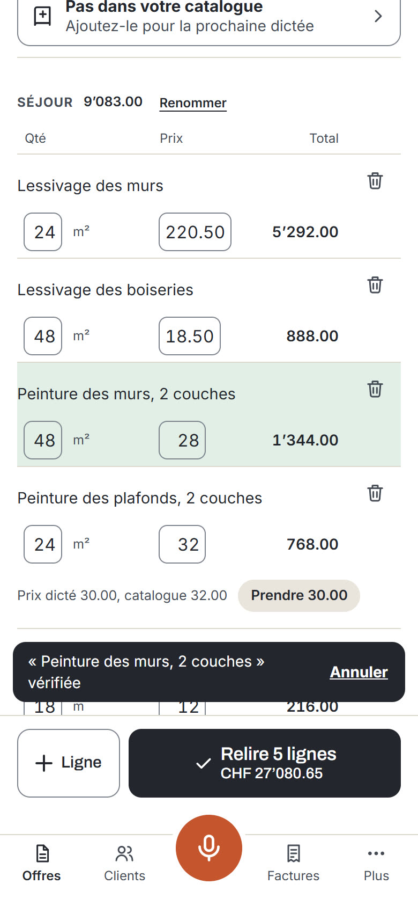
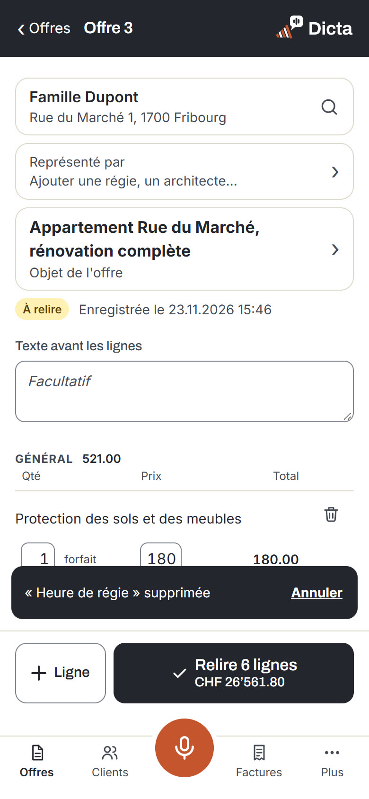
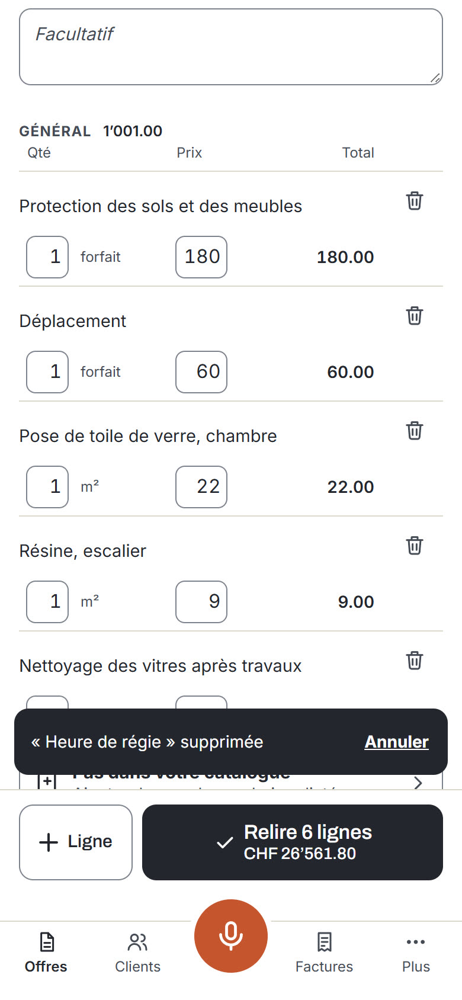
D2. Quand l'artisan touche « C'est juste », la corbeille, un prix dicté, une option…
A : immédiat sur tous les réseaux, l'écran se corrige si le serveur refuse (rare). B : 138 ms en 4G, 572 ms sur le chantier, sans rien recharger. C : 536 ms en 4G, 2,7 s sur le chantier.
D3. « Créer la facture », « Émettre », se connecter et se déconnecter attendent la réponse du serveur avant d'afficher la suite (numéro de facture, session).
« + Ligne » et le catalogue dans le téléphone
Aujourd'hui, la fenêtre « + Ligne » télécharge tout le catalogue à chaque ouverture : 36 Ko pour 274 produits, dont environ 27 Ko de jetons de sécurité (un jeton aléatoire par produit, que la compression ne réduit pas ; un seul suffirait, la fenêtre pèserait 9,6 Ko). Chaque produit touché retélécharge tout le catalogue, et « Terminé » recharge l'offre.
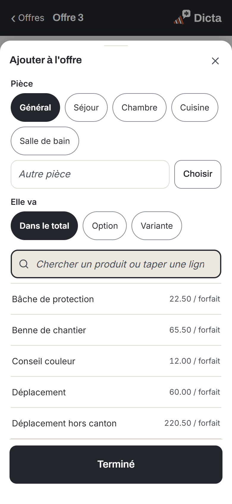
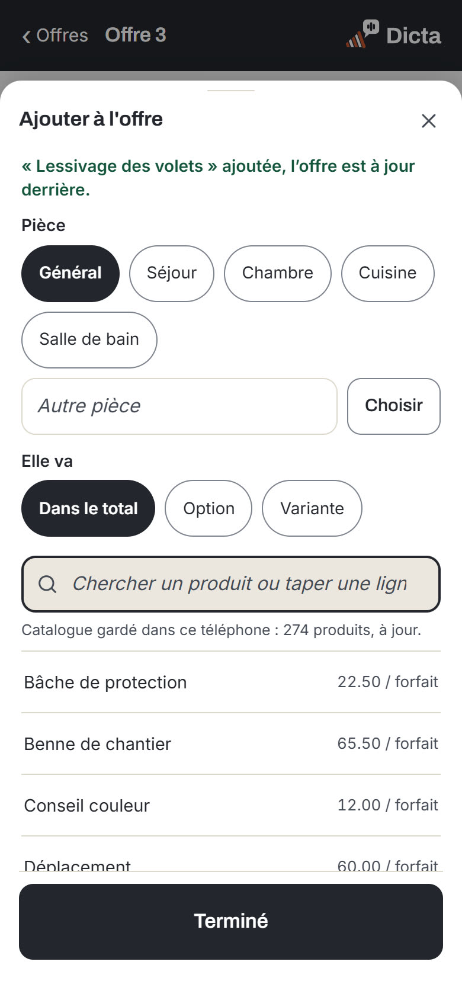
Le catalogue part dans le téléphone quand la connexion est bonne (à l'ouverture de l'application, puis à chaque changement), 3,6 Ko compressés pour les 274 produits (30 Ko bruts, mesuré sur un export JSON de la base), 0,8 Ko pour les 42 clients : moins qu'une seule ouverture de la fenêtre aujourd'hui. Il sert aussi à « Pas dans votre catalogue », au rattachement et à la fiche produit.
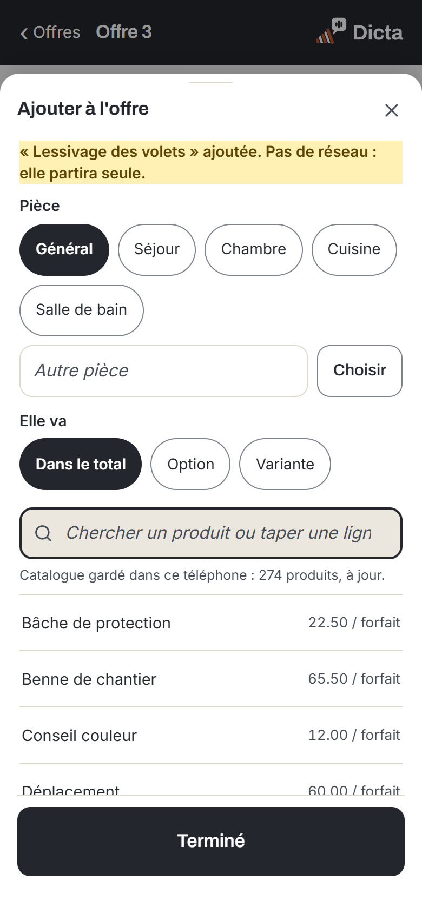
D4. Quand le téléphone reçoit-il le catalogue ?
Sans réseau, ou presque
Aujourd'hui
Sur un réseau lent, rien ne dit que le toucher a été pris : seuls les formulaires à identifiant changent de bouton pendant l'envoi (envoisDeFormulaires dans app.js), et « C'est juste », la corbeille, l'archivage n'en ont pas. L'écran reste figé jusqu'à la page suivante, 2,7 s plus tard sur le chantier. On retouche.

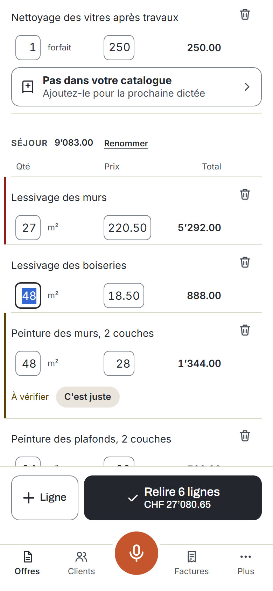


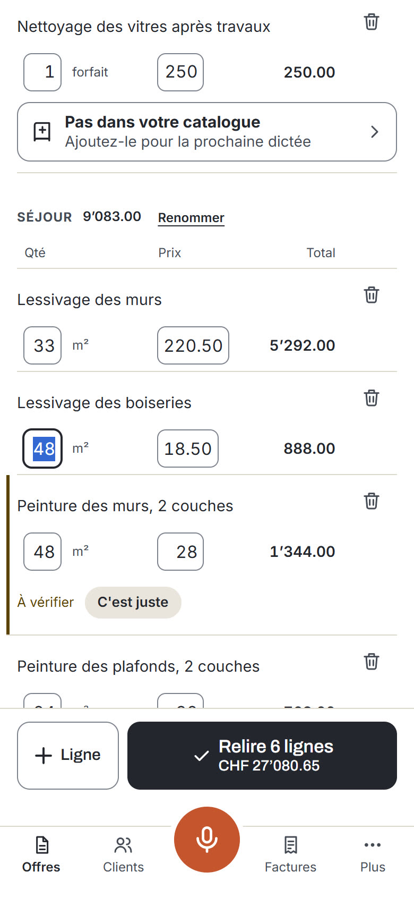
- Quantité tapée sans réseau (24 m² passés à 27). L'écran dit « Non enregistré : pas de connexion ». En base : 24 m² avant ; 24 m² huit secondes après le retour du réseau ; 27 m² une fois l'offre quittée. Le chiffre ne repart pas seul : il ne part que si l'artisan quitte l'offre avec du réseau.
- Deux corbeilles touchées à 0,7 s d'écart, réseau de chantier. Le serveur accepte les deux envois (2 réponses 303), les lignes 36,37 sont retirées en base. La page qui arrive n'affiche qu'un bandeau : « Lasure, balcon » supprimée · Annuler (une corbeille seule affiche bien le sien : « Heure de régie » supprimée · Annuler). Les deux lignes partent, un seul « Annuler » : la première ne peut plus être remise.
- « Archiver » retouché 0,6 s plus tard, réseau de chantier. Un seul archivage (offre archivée en base) ; le second toucher ne trouve plus le bouton, la carte s'est refermée. La liste revient avec « Rafraîchissement du séjour » archivée · Annuler. Rien à signaler.
- Session perdue, une quantité tapée (24 m² passés à 33). L'indicateur reste sur « Enregistrement… » pour de bon ; en base : 24 m² avant, 24 m² après. Rien n'est enregistré, rien ne le dit.
Proposé
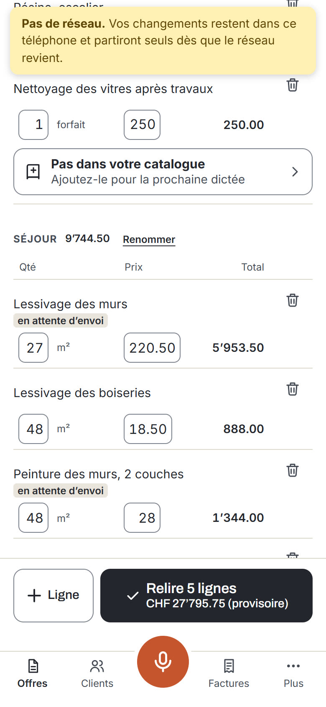
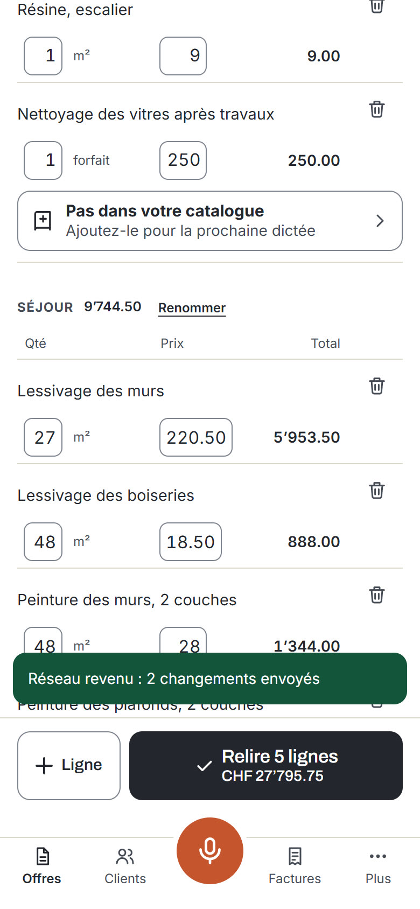
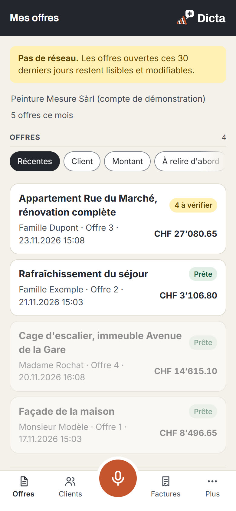
Comment : un « service worker » (un petit script que le navigateur garde) sert la feuille de style, le script et les pages déjà vues quand le réseau manque ; chaque geste fait hors réseau part dans une file d'attente rangée dans le téléphone, avec une clé unique pour que le serveur ne l'applique jamais deux fois (même principe que la dictée à l'abri d'aujourd'hui).
D5. Que peut faire l'artisan sans réseau ?
D6. Ce que le téléphone garde, effacé à la déconnexion
Données de clients de l'artisan (noms, adresses) : à écrire dans la politique de confidentialité, comme la dictée gardée dans le téléphone.
D7. Le total, sans réseau
A : le téléphone fait la somme des lignes ; rabais, TVA et arrondi restent au serveur. B : aucun risque de montant faux à l'écran.
Le PDF et « Envoyer »
« Générer l'offre » ouvre une page, télécharge PDF.js (515 Ko compressés, bibliothèque et worker) quand le cache est périmé, et fait refabriquer le PDF au serveur (0,3 s pour 6 lignes, 0,6 s pour 33) : 990 ms en local, 1,6 s en 4G, 16,4 s sur le chantier, jusqu'au PDF dessiné. Avec PDF.js gardé dans le navigateur (lot 1) : 666 ms en 4G, 2,0 s sur le chantier. « Envoyer » redemande ce même PDF au serveur avant d'ouvrir le partage du téléphone, puis recharge la page pour noter l'envoi.
- Partager le PDF déjà affiché : aucune requête de plus.
- Noter « envoyée » sans recharger la page.
- Garder le PDF au serveur tant que l'offre ne change pas.
- Hypothèse, non vérifiée : sur iPhone, Safari n'accepte d'ouvrir le partage que peu après le toucher ; si le PDF met plus longtemps à arriver, le partage peut être refusé sans rien dire. À essayer sur ton iPhone en 3G.
D8. PDF partagé tel qu'affiché, « envoyée » sans rechargement, PDF gardé tant que l'offre ne change pas
Parler : déjà sans rechargement
La dictée est le seul long chemin qui ne recharge rien : l'enregistrement part avec sa progression, reste à l'abri dans le téléphone jusqu'à l'offre prête, et les étapes avancent seules (une question au serveur chaque seconde). Mesuré avec une dictée de peintre de 28 s et la vraie transcription :
| Réseau | Envoi de la dictée | Offre prête | Offre affichée | Questions « où en est-on ? » |
|---|---|---|---|---|
| Fibre | 303 ms | 56,3 s | 56,3 s | 53 (31 Ko) |
| Chantier | 4,6 s | 24,8 s | 24,8 s | 10 (5,8 Ko) |
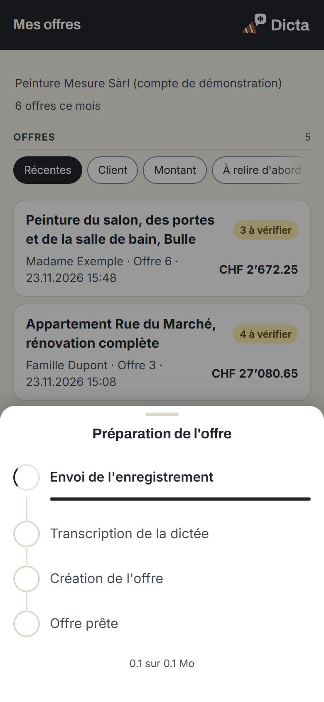
Rien à changer pour la fluidité. L'offre prête ouvre une page entière : c'est un autre écran, le rechargement y est utile. Le temps d'attente vient de la file de transcription d'Infomaniak (56 s puis 25 s pour la même dictée, à quelques minutes d'écart).
Trois façons de faire
A. Morceaux de page, script maison (conseillé)
Le serveur garde ses pages. Pour un envoi fait par le script, il répond par les morceaux qui changent (la ligne, les totaux, la carte) au lieu d'une redirection ; app.js les remplace.
- Aucune dépendance nouvelle, conforme à
CODING_RULES.md. - Les calculs restent au serveur : TVA, rabais, arrondi, options ne sont pas écrits deux fois.
- Sans JavaScript, les formulaires marchent comme aujourd'hui.
- Geste par geste : chaque lot se livre et se teste seul.
- Chaque contrôleur apprend une seconde réponse ; environ 300 lignes de script à écrire.
B. Une bibliothèque (htmx)
Même principe, porté par une bibliothèque : des attributs dans les gabarits disent quel morceau remplacer.
- Moins de script à écrire pour les échanges.
- Une dépendance qui donne la forme des écrans :
CODING_RULES.mdl'écarte. - Réglages à faire pour la politique de sécurité (pas de code évalué, pas de style en ligne).
- Rien pour le hors réseau : la file d'attente reste à écrire.
C. Application JavaScript complète
Le serveur ne rend plus que des données ; le téléphone dessine tous les écrans.
- La plus fluide, le hors réseau devient naturel.
- Totaux, TVA, rabais, options réécrits dans le navigateur : deux calculs qui peuvent diverger du PDF.
- Tous les écrans à refaire : des semaines, et un cadre applicatif que tu as écarté.
D9. Quelle approche ?
Lots, ordre et estimation
| Lot | Contenu | Estimation |
|---|---|---|
| 1. Socle | Cache des fichiers et adresses versionnées, ETag corrigé, un jeton par page, double toucher. | 3 h |
| 2. L'offre | Les 24 gestes de l'offre, de la relecture, de la liste et du brouillon de facture changent sur place ; la ligne s'ouvre en fenêtre au téléphone ; réponses réduites pour quantité et prix. | 12 h |
| 3. Ajouter et catalogue | Catalogue et clients dans le téléphone, « + Ligne » sans requête, catalogue et clients sans retéléchargement de la liste, tri et catégories dans le navigateur. | 8 h |
| 4. Hors réseau | Service worker, file d'envoi avec clé unique, bandeau, total provisoire, effacement à la déconnexion, essais de coupure. | 16 h |
| 5. PDF et envoi | PDF partagé tel qu'affiché, « envoyée » sans rechargement, PDF gardé tant que l'offre ne change pas. | 3 h |
| Revue et recette | Sur le site de test, réseau lent et coupé, iPhone et Android. | 5 h |
Total : 47 h, estimation de Claude. La tâche Origin 504 en prévoyait 16, pour la relecture et la création d'un produit seulement.
D10. Ordre des lots : 1, 2, 3, 4, 5
Risques et limites
- iPhone. Safari peut effacer ce qu'un site a rangé dans le téléphone après 7 jours sans visite (application non installée sur l'écran d'accueil). Ce que le téléphone garde peut disparaître : la file d'envoi part dès que possible et le dit si elle attend.
- Deux appareils. Une ligne changée hors réseau sur le téléphone et au PC entre-temps : le dernier envoi gagne, l'écran le signale.
- Session expirée hors réseau. La file attend la reconnexion, puis repart avec un jeton neuf.
- Données dans le téléphone. Noms et adresses des clients de l'artisan : effacés à la déconnexion, rangés par compte (comme la dictée à l'abri), à écrire dans la politique de confidentialité.
- Mesures. Réseaux simulés sans perte de paquets, processeur de PC : un vrai téléphone sur un vrai chantier sera plus lent, surtout pour les rechargements.
Copier mes réponses
Ce texte se remplit avec tes choix. Copie-le et colle-le dans la conversation.
Copié.